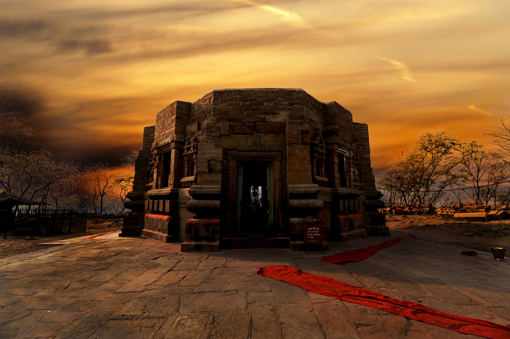
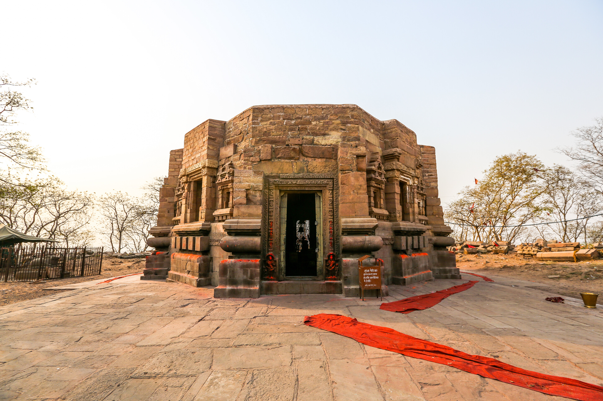

About Mundeshwari Devi Temple
The Mundeshwari Devi Temple in Kaimur has idols of Lord Vishnu, Surya and Ganesha. It is famous as the oldest functional temple of the world, with a history dating back to the 6th century AD.
Located on the Mundeshwari Hills, this temple is dedicated to Lord Shiva and Shakti. The temple features unique octagonal architecture and showcases the rich cultural heritage of ancient Bihar.
Historical Significance
Mundeshwari Devi Temple is believed to be the oldest functional temple in the world, with continuous worship for over 1,400 years. The temple has withstood the test of time and remains an important pilgrimage site for devotees.
Architecture
The temple features unique octagonal architecture, which is rare in Indian temple construction. The sanctum sanctorum houses idols of various deities, and the temple walls are adorned with intricate carvings and sculptures.




Visitor Information
The temple is open throughout the year and can be accessed by a short trek from the base of the hill. The best time to visit is during the winter months. Special festivals are celebrated during Navratri and other important Hindu occasions.
← Back to Destinations